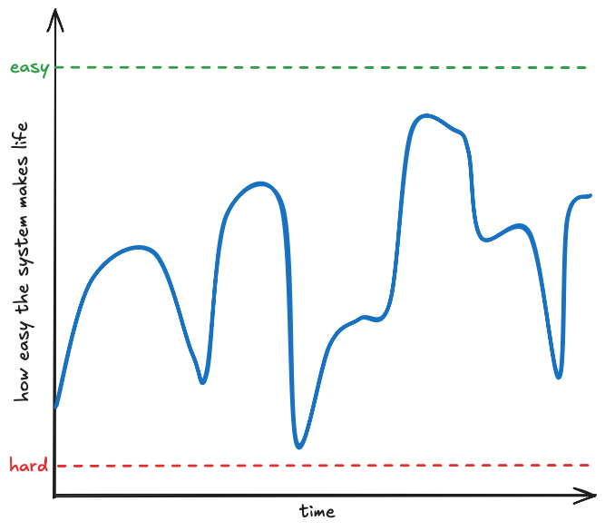

How wise is doing your own therapy by writing and putting it online?
System Building & Problem Solving
I build systems to solve problems. It’s what I have done for as long as I can remember.
When I learn about a problem I can’t help but think through ways to tackle it. I think about the variables in play, the joints and how they pivot, the factors that cause it and how they could be influenced, look at the downstream effects of hypothetical changes and ask myself what 2nd & 3rd order effects might be.
But what if the system building is the problem?
The real problem is that problems exist, and always will exist, and are a completely unavoidable fact of life. Not all problems are solvable. Worst of all, it’s in our nature as humans to grow dissatisfied with whatever solutions you do come up with.
I build a system to manage my tasks. I decide that system should have deadlines. It should handle project notes. I move the system to a new platform and tweak it. I tweak the tweaks. The whole thing works flawlessly.
But after a while I find myself simply not using it. I figure the issue is something inherent to the system design. I migrate tools and start from scratch. I build goals and tasks and projects that all interconnect. I introduce templates and work the system to a well-honed, perfectly balanced, harmonious coalescence of congruent parts - each dovetailing perfectly into the other. The system stabilizes. It hums.
But then time passes, and it turns out still life is hard. I forget things or feel overwhelmed. I ask myself “why am I having this type of problem when I have spent so much energy working the system to handle these sorts of things? Could I rethink or reengineer the system to make this easier?”. I do something new or different or start from scratch again.
So the system keeps evolving and resetting. There’s a lack of continuity and consistency, which is totally antithetical to good design principles and my general ethos.
The real problem is there is no system that makes life easy.
Looking at things from a broader perspective, I have incurred so much overhead cost in trying to find things that take the overhead cost out of life. You take 3 steps forward. Then find out you’ve already been here before.

But this is also who I am. It is what I do for myself, at my job, and for those I love. I enjoy doing it. I like that it is who I am. It (can) add value to life. I took a break from designing a system to write this. I am excited to write about that system after the holidays are over1.
A Coding Metaphor for Non-coders
This metaphor is a bit of a stretch, but I think it’s at least somewhat valid.
Coding is like organizing your house. You set up bookshelves and end tables and stuff, and everything is hunky dory. Then you slowly accumulate new things and start just finding places to put them. Every once in a while, you have to stop and work on the overall feng shui of what used to work. You need to spend time working on new shelving units, even if that means tearing down the old ones.
You can prevent some of this by planning in advance how you’re going to handle things, but you can’t forsee everything.
You balance “finding a place to stick this thing you need” with “redoing what you’ve already done so that the thing you need has a place that makes sense (and, ideally, replaces several other things)”.
Top 5 8: Systems that Work
The common theme in this is what coding folks call “Conceptual Integrity” - each of these things handles one thing, and handles it well. This didn’t start out as a list of productivity things, but it did sort of end up that way.
8. Use a Daily Post-It
Have a physical piece of paper, doesn’t have to be a post it, but does have to be small. Write down those few things you need to find time to do today, the things you need to remember. See my note on this.
7. Put it Where You Need It
Any time you can, take advantage of space. If you know your kid needs to wear a particular outfit for school tomorrow, set that outfit out. Put it directly in the way of where you’d need to go to get something else. Leave things that need dealt with out - and deal with it when you leave it out. Don’t let “things you want to get to someday” get in the way of things you need to do as soon as you can. See my note on this.
6. Checklists
The humble checklist, especially a checklist you made yourself & located to surface when it is relevant, is just a darn good way of doing things. A simple “do this and this and this” ensures consistency, frees up mental space, and can jumpstart your progress. See my note on this.
Also, templates are checklists.
5. A Scheduled Weekly Review
The Weekly Review is probably the single most frequently suggested “productivity habit” you’ll find recommended by people who recommend those kinds of things. Having a weekly ritual to check your bases and think about the week ahead is a no-brainer. Schedule it to block time for it. See my note on this.
Also, block your time.
4. Having an Inbox
An inbox is a default place for things to go that you need to deal with. If you don’t have an inbox, things you need to deal with end up going wherever, which means you won’t necessarily deal with them. For an inbox to be useful, you need to use it. Seems obvious, but the point is that you need to consistently empty it out to make it the functional. See my note on this.
3. Habit Trackers
I’ll continue to credit the Streaks app for having the biggest impact on my day-to-day life. Of course there’s nothing special about streaks in general - any sort of daily checklist for things you’d like to (or need to) do each day. See my note on this.
2. Reminders & Alarms
Your phone is your friend. Use it. All the time.
1. Siri Shortcuts as a Capture Mechanism
The built-in Siri Shortcuts workflow management is super capable, and you can super power it with apps like Scriptable and Pythonista to allow you to run regular old code. Honestly this section of this already way-too-long Column deserves its own page. Or its own dedicated entire blog2.
Quote:
I give credit to whoever stole it last - Zane
We’re calling this ‘controlling what you can when things feel out of control. ’ - Olaf